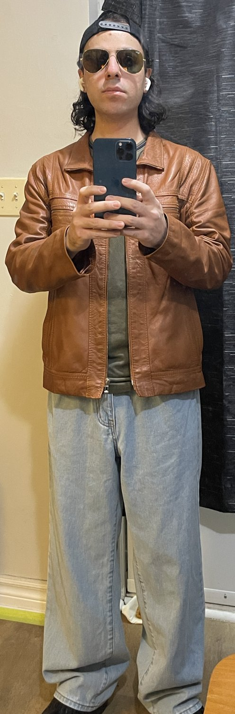

The standard
All or nothing. Zero, or one. There’s nothing in between, and there never has been. True 4K, max settings, the vanilla game, all the way through.
About
I know exactly how that sounds. Here’s the honest version — and what I’m doing instead.
I’ve been making things on the internet for over twenty years. And I’ve got nothing to show you. Nothing. Zero.
Because every single time, I got scared, and I deleted it. All of it. The whole channel. Gone. And not because I’d done anything wrong — but because I thought that maybe, somewhere, I might have broken some rule that I couldn’t even name. And instead of finding out, I just deleted everything. Two decades of work. Because I was afraid.
So that’s the real reason you’ve never heard of me. It’s not that I didn’t do the work. It’s that I kept setting the work on fire.
This time, I’m not deleting anything because I got scared. That’s the promise. If I’m wrong about something, I’ll say so, and the video stays up. The only thing that would ever come down is something that put a real person in danger — and if that ever happens, I’ll tell you that’s exactly why. But fear doesn’t get to delete anything. Not ever again.
The reason I’ve achieved anything in my life — anything at all — is my father and my mother. And let me tell you what that actually meant.
They didn’t have much. And every single thing they had, they put into me. Not into themselves. Not once. For years. Every choice. Every day. All of it was about getting me an education.
So I studied. I studied civil engineering. Concrete. Steel. Water. Soil. How to calculate whether a building actually stands up. There’s no creative interpretation of whether a beam carries a load. It does, or it doesn’t. That was my first real teacher: the habit of being right, because being wrong has consequences you can’t delete.
And my parents paid for that. Not with money. With years they’re never getting back.
I did all of it. The degree. The job. Everything they wanted for me. And if I was still doing it today, I’d be richer. Dramatically richer. It’s not close. I could be doing that work right now — I know exactly how to do it.
And I walked away from it, to play video games.
If you’re a parent, and you gave up everything you had so your child could get out — and then that child turns around and says, actually, I’m going to play video games — you tell me what that feels like. It’s not a small thing. And the explanation isn’t that I got lazy.
So here’s the question I asked myself. Imagine it’s your last day. What would actually matter to you? The most valuable thing anyone has is time. And by time, I mean doing what you want to do, during that time.
So I ran that test on myself, and I got exactly two answers. Only two. One: help my father and my mother. Two: finish as many games as I possibly can, at the highest quality possible. That’s the whole list.
Because being an engineer answers number one. It never, ever answers number two. So I’m trying to do both. That’s what this is.
I play games the way the developers made them. No mods, no community textures, no “improved” lighting packs — and not because there’s anything wrong with them. Some of them are better than the original, and I know it. It’s that I want to see the thing that shipped. Somebody sat in a room and decided what colour that wall is. Who am I to overrule them. I’ll let a game run sharper and smoother than it could in 2005. I won’t let anything repaint it. Nobody repaints the museum.
And I finish them. All the way. See everything, do everything — every room, every file, every line of dialogue somebody wrote and almost nobody heard.
Because digital things evaporate. Servers go down, storefronts pull the game, licences expire, studios die — and a game, the vanilla version, the one the developers actually made and shipped and meant, can just quietly stop existing. So I think of this as a museum. I’m an archivist. It’s a small thing. I know it’s a small thing. But it’s mine, and I’m doing it.
And when I’m not doing that, I talk — about anything in the universe that I’ve actually thought about. Not a topic somebody handed me. Not a trend. Whatever is genuinely eating my brain that week.
I’m saying these out loud, in public, so that you can hold me to them.
Those are the four. If I ever break one — you come and find me, and you tell me.
The Resident Evil games hide things — medallions, crests, gems — in places where, honestly, you’d need to be a psychic. Or a remote viewer. Or some kind of alien. So you go and look it up — and the guide shows you a screenshot, and the screenshot spoils the room you haven’t even walked into yet.
So my guides work in levels. Level zero is a nudge. Level one tells you more. Level two, more than that. And level three — only if you truly need it — is a drawing, done by hand. Not a screenshot from the game. A drawing. So you get the answer without getting the room. They tell you where to back up your save, and where the point of no return is — before you cross it, not after.
I’ve already wasted those hours. You don’t have to. They’re here, they’re free, and they’ll always be free →
No filter, no persona
I don’t soften the camera. I don’t put a filter on my face. I don’t drop the resolution to hide anything. A camera isn’t kind to a face — and it isn’t kind to mine. That’s the cost of not hiding, and I’m paying it.

All or nothing. Zero, or one. There’s nothing in between, and there never has been. True 4K, max settings, the vanilla game, all the way through.
Nothing that matters is locked. What I’m actually asking you for is your time — and I know that’s the most valuable thing in the universe. So I’m going to try very hard to be worth it.